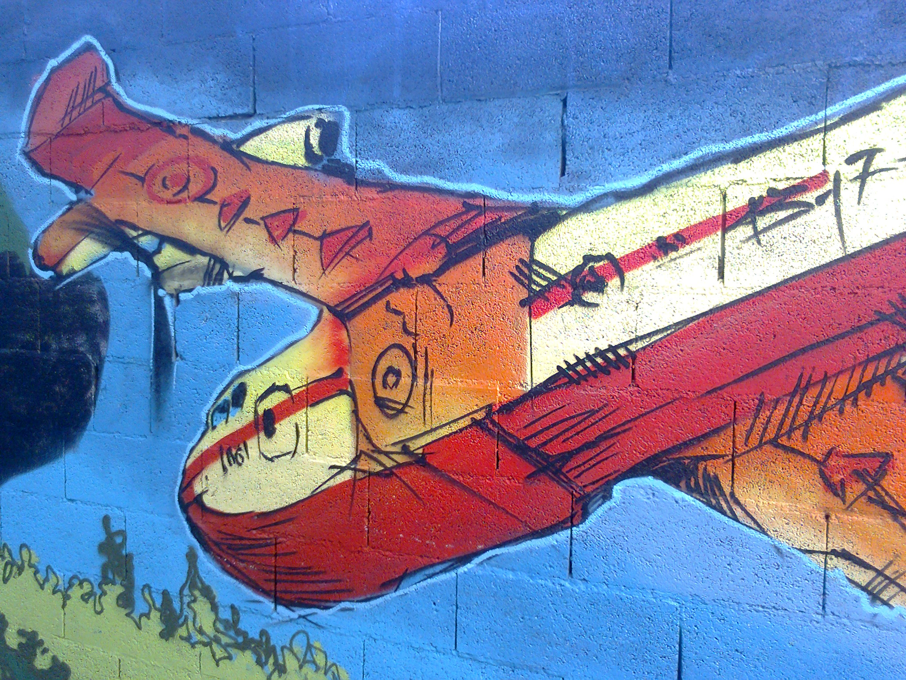

<!-- HTML footer for doxygen 1.8.6-->
<!-- start footer part -->
<!--BEGIN GENERATE_TREEVIEW-->
<div id="nav-path" class="navpath"><!-- id is needed for treeview function! -->
  <ul>
    $navpath
    <li class="footer">project
      <a href="https://www.github.com/gabrielalzamora/apikinect">
      </a> 
	</li>
  </ul>
</div>
<!--END GENERATE_TREEVIEW-->
<!--BEGIN !GENERATE_TREEVIEW-->
<hr class="footer"/><address class="footer"><small>
project &#160;<a href="https://www.github.com/gabrielalzamora/apikinect">

</a> v1
</small></address>
<!--END !GENERATE_TREEVIEW-->
</body>
</html>
